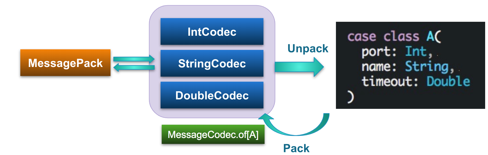

airframe-codec: Schema-On-Read Object Serializer
airframe-codec is an MessagePack-based schema-on-read data serializer for Scala and Scala.js.
For example, if you need to do the following things, airframe-codec will be helpful:
- Storing object data to disks
- Sending object data to remote machines (e.g., from Spark applications)
- Reading JSON responses from HTTP servers and mapping them into Scala case classes
- etc.
In Java, Jackson, a JSON-based data serialization library, can be used for mapping between JSON and classes. To control the mapping to objects, you need to add @JSONProperty annotation and configure ObjectMapper. airframe-codec simplifies this process so that you can use case classes in Scala without any annotations. For producing compact binaries of your data, it also supports MessagePack format as well as JSON.
With airframe-codec you can:
- Encode Scala objects (e.g., case classes, collection, etc.) into MessagePack binary or JSON format. It's also possible to decode it as Scala objects.
- By using pre-defined codecs, serialization of primitive types and collection in Scala, such as Int, String, Double, Array[X], Seq[X], Map[X, Y] can be naturally supported.
- It's also possible to convert JDBC result sets into MessagePack/JSON.
- You can add your own custom codes through MessageCodecFactory interface.
- Schema-on-read data conversion is supported. For example, even if your data is string representation of integer values, e.g., "1", "2, "3", ..., airframe-codec can convert it into integers if the target schema (e.g., objects) requires integer values.
Usage

libraryDependencies += "org.wvlet.airframe" %% "airframe-codec" % "(version)"
import wvlet.airframe.codec.MessageCodec
case class A(id:Int, name:String)
// Automatically generate a codec (MessagePack-based reader/writer) for A
val codec = MessageCodec.of[A]
// Convert an object into msgpack binary
val a = A(1, "leo")
val msgpack = codec.toMsgPack(a)
// Read MsgPack data as object (exception-free)
codec.unpackMsgPack(msgpack) // Some(A(1, "leo")) or None
// MsgPack -> Object (MessageCodecException will be thrown when parsing is failed)
codec.fromMsgPack(msgpack) // A(1, "leo")
// Convert to JSON
val json = codec.toJson(a) // {"id":1,"name":"leo"}
// Exception-free json parser
codec.unpackJson(json) // Some(A(1, "leo")) or None
// JSON -> Object (MessageCodecException will be thrown when parsing is failed)
codec.fromJson(json) // A(1, "leo")
- To create a custom codec, use MessageCodecFactory.
case class Person(id:Int, name:String)
// Create a codec for serializing your model classes
val codec = MessageCodec.of[Person]
// Serialize in JSON or MessagePack
val a = Person(1, "Ann")
val json = codec.toJson(a) // {"id":1,"name":"Ann"}
val msgpack = codec.toMsgPack(a) // MessagePack ArrayValue: [1,"name"]
// Deserialize from JSON or MessagePack
codec.fromJson(json) // Person(1, "Ann")
codec.fromMsgPack(msgpack) // Person(1, "Ann")
Internally, airframe-codec uses airframe-surface to extract type information from Scala classes.
Schema-On-Read Conversion
airframe-codec adjusts input data types according to the target object types. This schema-on-read data conversion is quite powerful for mapping various types of input data (e.g., CSV, JSON, etc.) into Scala case classes.
val json = """{"id":"2", "name":"Bob"}"""
// "2" (String) value will be converted to 2 (Int)
codec.fromJson(json) // Person(2, "Bob")
Mapping between MessagePack and objects can be performed by combining codecs for individual parameter types:

Querying JSON and MessagePack Data
airframe-codec can be used for extracting data from JSON and MessagePack data. For example, if you have the following JSON data:
[
{"id":1, "name":"xxx", "address":["aaa", "bbb", ...]},
{"id":2, "name":"yyy", "address":["ccc", "ddd", ...]}
]
You can extract only the ids and the addresses from this JSON by defining a case class matching a pattern you want to extract:
case class AddressQuery(id:Int, address:Seq[String])
MessageCodec.of[Seq[AddressQuery]].fromJson(json)
// This code extracts:
// Seq(AddressQuery(1, Seq("aaa","bbb")), AddressQuery(2, Seq["ccc","ddd"]))
Zero: Default Values
When mapping data into objects, some parameter values might be missing in the input data. In this case, airframe-codec will try to populate these missing parameters with the default values of the target types, called Zero. This default parameter mapping is defined in Zero.zeroOf[X]. For example, if the target type is Int, zeroOf[Int] will be 0, and for String zeroOf[String] is "" (empty string).
Default Values
X: type | zeroOf[X] | Notes |
|---|---|---|
| Int | 0 | |
| Long | 0L | |
| String | "" | |
| Boolean | false | |
| Option[X] | None | |
| Float | 0.0f | |
| Double | 0.0 | |
| Array[X] | empty array | |
| Seq[X] | Seq.empty | |
| class A(p1:P1 = v1, ...) | A(p1 = v1, ...) | the default parameter value |
| class A(P1, ...) | A(zeroOf[P1], ...) | zero value of each parameter |
Strict Mapping Annotation
If you need to ensure the presence of some parameter values, add @requried annotation to the target object parameters. If some necessary parameter is missing, MessageCodecException will be thrown:
import wvlet.airframe.surface.required
case class Person(@required id:String, @requried name:String)
val codec = MessageCodec.of[Person]
// Throws MessageCodecException (MISSING_PARAMETER) exception as id value is not found
codec.fromJson("""{"name":"Peter"}""")